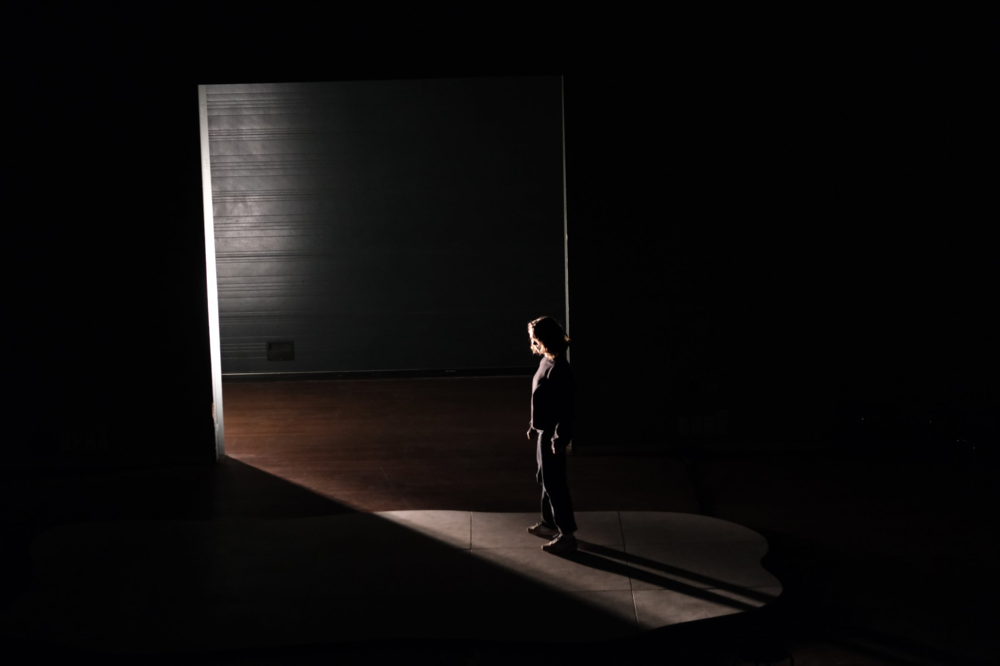
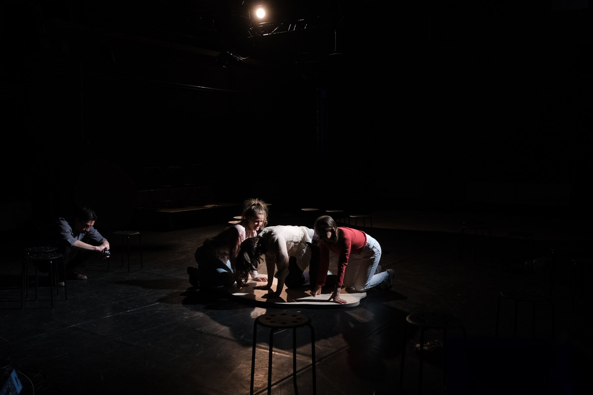
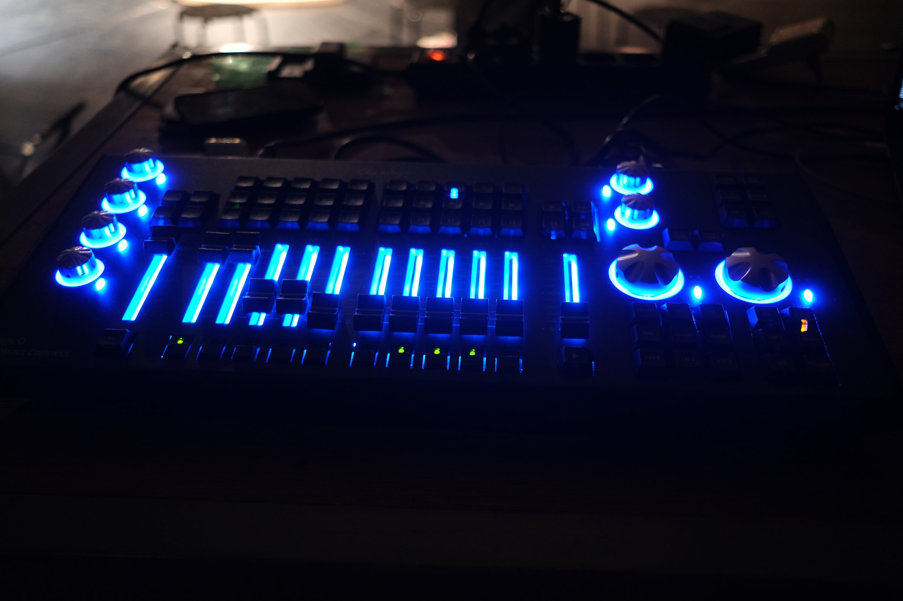
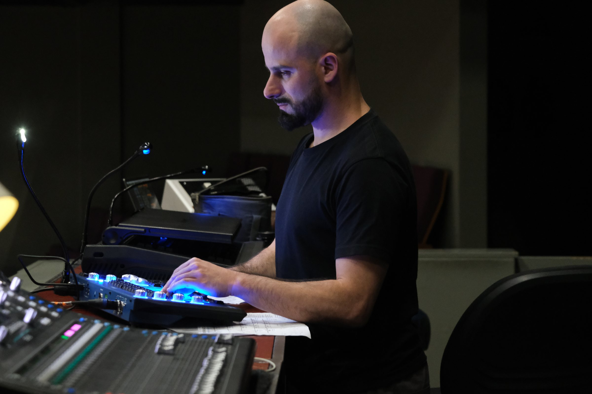
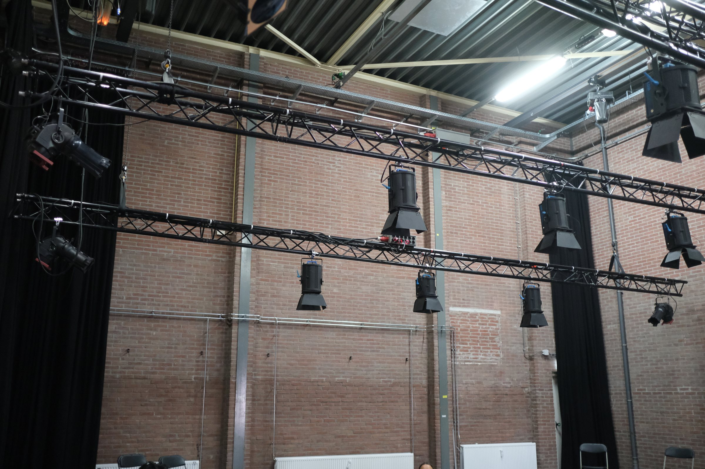
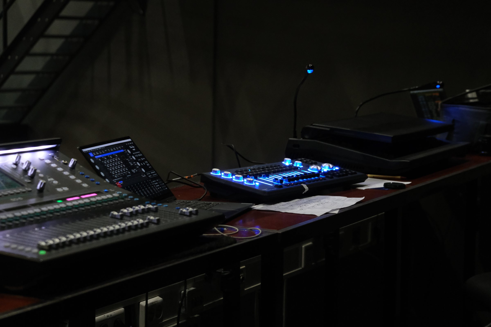

01 / 06
Time & Time Again
Técnico, diseñador y operador de luces
Un concierto coreográfico en el que danza, sonido en directo y arquitectura se afectan mutuamente. La luz debía sostener la proximidad con el público, hacer legible el movimiento y transformar espacios con equipamientos muy distintos.
- Desarrollo del concepto, plano técnico y estructura de cues.
- Preparación del showfile y programación con ChamSys Compact Connect.
- Adaptación de patch, posiciones y focos a cada sala.
- Coordinación de montaje con los equipos técnicos locales y operación en directo.
- Contexto
- Het Motorblok / Verkadefabriek
- Sistema
- ChamSys · MagicQ
- Formato
- Residencia + presentación





